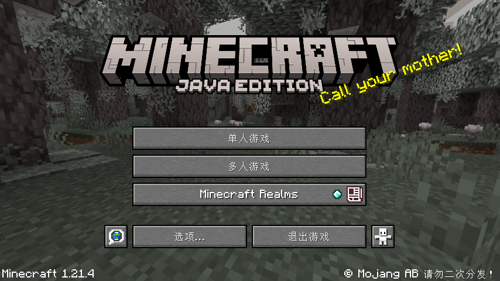
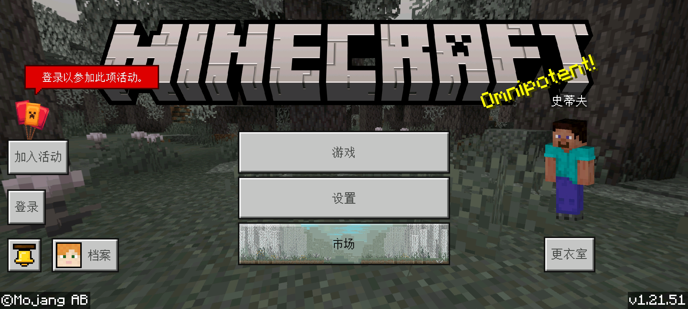
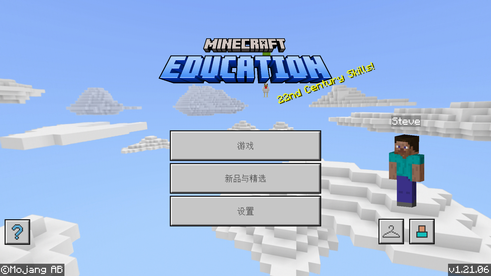
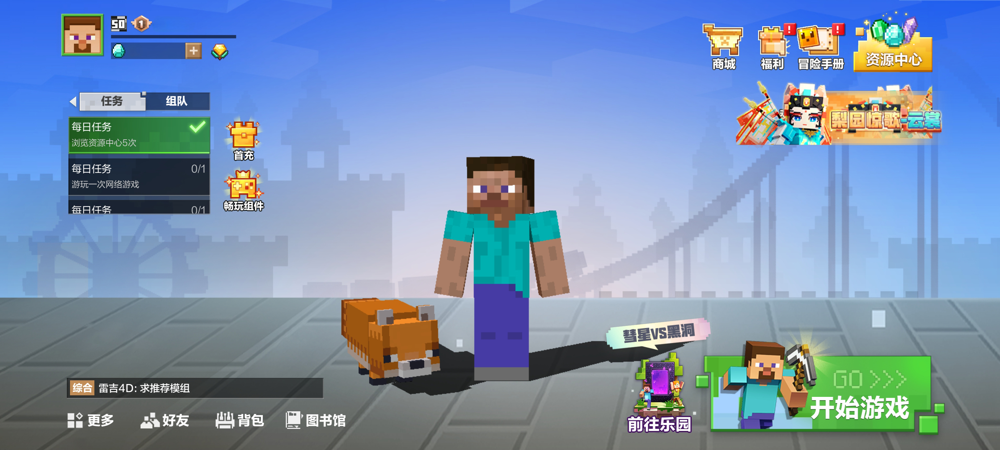

Minecraft简介
Minecraft（《我的世界》）是由Mojang Studios开发的一款3D沙盒电子游戏。玩家可在游戏中无拘无束地在3个维度内与由方块和实体构成的世界互动。多种玩法可供玩家选择，带来无限可能。 Minecraft当前可分为Java版、基岩版和教育版，另有为中国大陆玩家提供的中国版，开创者为马库斯.佩尔松（Notch）。游戏现由Mojang Studios维护，隶属于Microsoft Xbox游戏工作室。 自开创伊始到延斯.伯根斯坦（Jeb）加入并负责开发之前，Minecraft几乎全部的开发工作由Notch完成。游戏音乐由丹尼尔.罗森费尔德、莉娜.雷恩、谷冈久美和Aaron Cherof创作；克里斯托弗.塞特斯特兰德和Sarah Boeving绘制了游戏中的画。游戏最初于2009年5月17日作为Classic版本发布，并于2011年11月18日发布正式版。至今，Minecraft的游戏平台已囊括移动设备和游戏主机。2014年11月6日，Minecraft及Mojang的全部资产被微软以25亿美元收购。Notch从此离开了Mojang，不再为Minecraft工作。截至2023年10月，Minecraft的销量已经突破3亿份。 Minecraft着重于让玩家探索、交互并改变一个动态生成1立方米大小方块的世界。除了方块以外，环境中还包括动植物与物品。游戏的内容包括采集矿石，与敌对生物战斗，以及收集游戏中的各种资源来合成新的方块与工具。开放的游戏模式允许玩家在各类多人服务器或单人地图中创造建筑物与艺术作品。其他内容包括用于逻辑运算与远程控制的红石电路、矿车及铁轨，以及称之为“下界”的神秘维度。最终，可以选择前往一个叫做“末地”的维度旅行，并击败末影龙。
Minecraft版本介绍
-

Java Edition(Java版)
Minecraft：Java版（Minecraft: Java Edition）是Minecraft的最初版本，由Mojang Studios为Windows、macOS与Linux开发。Notch于2009年5月10日开始游戏的开发，于2009年5月17日公开发布首个版本。完整的正式版游戏于2011年11月18日的MINECON 2011上发布。
-

Bedrock Edition(基岩版)
基岩版（Bedrock Edition，官方通常称为无副标题的Minecraft）是由Mojang Studios、Xbox Game Studios和SkyBox Labs开发的多平台版本Minecraft，基于与携带版一脉相承的游戏引擎基岩引擎。
拓展：
“基岩版”一词来自基岩代码库（Bedrock codebase），指使用C++语言编写以在不支持Java的平台上运行。在不同平台上，虽然为了适应网络和存储访问等目标平台差异而修改了代码，但仍然使用了大约90%的相同代码。这个共同的功能核心被称作“基岩引擎”（Bedrock engine），但事实上引擎本身并没有独立的物理存在。 代码库位于管理代码片段并跟踪其演变的软件系统中。这使得代码库不仅可以托管当前版本，还可以托管所有过去的版本、独立的基岩版专用服务器版本和多个测试版，同时避免了冲突。 各个目标平台上的构建是单独的，在构建完毕后会上传至各平台的应用商店。大多数应用商店都有自己的合规性要求，会在新版本可供玩家下载之前对其进行一系列的认证测试。Xbox游戏工作室尝试在各平台的应用商店上同时发布，但认证测试的过程不受他们的控制。这可能会导致某个版本在某个平台上延迟发布，尤其是当它未能通过认证并且必须返回给开发人员进行修复的时候。
-

Education Edition(教育版)
Minecraft教育版（Minecraft Education）是Minecraft特别为教室使用而设计的教学版本。它由Mojang Studios和Xbox Game Studios共同开发，包含了让Minecraft在课堂里容易使用的特性。完整的游戏已在2016年11月1日发布。[3]Beta版本的测试在2016年6月9日至11月1日间进行。
-

China Edition(中国版)
我的世界：中国版（Minecraft: China Edition），官方表述为《我的世界》中国版，是Minecraft Java版和基岩版的中国本地化版本，由Mojang Studios、Xbox Game Studios和网易联合开发。截至2023年9月27日已有7亿注册用户。中国版主要包括手游版和端游版，提供基岩版和Java版游戏。中国版是网易开发的手游/端游启动器和启动器内所包含Minecraft游戏的总称，启动器同时具有多人游戏、组件管理等功能。
Minecraft服务器介绍
服务器（Server）是指运行在互联网上，提供服务的计算机。Minecraft服务器是指运行在互联网上，提供Minecraft服务的计算机。Minecraft服务器的作用是让玩家可以与其他玩家在一个3D的虚拟世界中进行互动。服务器的运行需要硬件资源，如内存、CPU、硬盘等。服务器的运营需要服务器管理员，负责服务器的维护、管理、更新、以及玩家的服务。服务器的运营需要有一定的经济能力，能够为服务器提供足够的硬件资源。
Minecraft的游戏模式介绍
Minecraft的游戏模式分为：生存模式、创造模式、冒险模式、合作模式、生存模式。
生存模式：
生存模式（Survival）是Minecraft的默认模式，玩家在这个模式下可以自由的探索、建造、破坏、以及与生物、矿石、工具、武器等进行互动。
创造模式：
创造模式（Creative）是Minecraft的另一种模式，玩家在这个模式下可以自由的创造各种方块、工具、武器、生物、矿石等。玩家可以创造各种奇特的建筑、艺术品、机器、机器人、飞行器等。
冒险模式：
冒险模式（Adventure）是Minecraft的第三种模式，玩家在这个模式下可以与设定内的生物、矿石、工具、武器等进行互动，并可以进行各种冒险活动，但未被设定的方块、物品或者是实体都无法互动。
旁观模式：
旁观模式（Spectator）模式是Minecraft的第四种模式，允许玩家以飞行的方式无障碍穿过方块和实体并观察世界。
Minecraft的游戏机制介绍
《我的世界》的游戏机制是基于物理的，玩家在游戏中可以自由的移动、跳跃、攻击、破坏、以及与生物、矿石、工具、武器等进行互动。游戏中的物品、方块、生物、工具、武器等都有各自的属性，玩家可以根据这些属性来合成新的物品、方块、工具、武器等。游戏中的方块、生物、工具、武器等都有各自的动画效果，玩家可以根据这些动画效果来判断物品、方块、生物、工具、武器等的属性。
物品系统：
《我的世界》的物品系统是基于图形的，玩家在游戏中可以自由的创造、使用、交换、以及丢弃物品。玩家可以创造各种奇特的物品，如矿石、工具、武器、方块、生物等。玩家可以将物品堆叠、组合、以及搭配，创造出各种奇特的物品。
方块系统：
《我的世界》的方块系统是基于图形的，玩家在游戏中可以自由的建造、破坏方块。玩家可以建造各种奇特的建筑、机器、机器人、飞行器等。玩家可以将方块堆叠、组合、以及搭配，创造出各种奇特的建筑。
生物系统：
《我的世界》的生物系统是基于图形的，玩家在游戏中可以自由的与生物进行互动。玩家可以与生物进行交互，可以与生物进行战斗，也可以与生物进行交易。
工具系统：
《我的世界》的工具系统是基于图形的，玩家在游戏中可以自由的使用工具。玩家可以将工具堆叠、组合、以及搭配，创造出各种奇特的工具。
武器系统：
《我的世界》的武器系统是基于图形的，玩家在游戏中可以自由的使用武器。玩家可以将武器堆叠、组合、以及搭配，创造出各种奇特的武器。
游戏机制：
《我的世界》的游戏机制是基于物理的，玩家在游戏中可以自由的移动、跳跃、攻击、破坏、以及与生物、矿石、工具、武器等进行互动。游戏中的物品、方块、生物、工具、武器等都有各自的属性，玩家可以根据这些属性来合成新的物品、方块、工具、武器等。游戏中的方块、生物、工具、武器等都有各自的动画效果，玩家可以根据这些动画效果来判断物品、方块、生物、工具、武器等的属性。
Minecraft衍生IP游戏介绍
Minecraft Dungeons(《我的世界：地下城》)
Minecraft Dungeons（《我的世界：地下城》）是一款动作冒险类游戏。玩家可在游戏中独自勇闯地下城，或与最多4名其他玩家组队，在动感十足、充满宝藏、随机生成的元素各不相同的关卡中战斗——拯救村民，打倒邪恶的奇厄教主。
Minecraft Legends(《我的世界：传奇》)
Minecraft Legends（《我的世界：传奇》）是一款即时动作战略游戏。玩家可在游戏中以第三人称视角扮演一位来自主世界的英雄，保卫据点并与成群结队的猪灵战斗，以阻止它们在下界的腐败继续传播，守护主世界。
已经终止支持的衍生IP游戏：
Minecraft Story Mode(《我的世界：故事模式》)
Minecraft: Story Mode（《我的世界：故事模式》）是一款基于Minecraft制作的游戏，由Mojang Studios与Telltale Games合作开发。玩家可在游戏的章节中做出选择推动故事的进展，每一次选择都会对故事的走向产生影响。
Minecraft: Story Mode - Season Two（《我的世界：故事模式 - 第二季》）是前者的
续作，以前作的剧情为基础续写了故事，并添加了一些新的故事情节和人物。
Minecraft Earth(《我的世界：地球》)
Minecraft Earth（《我的世界：地球》）是一款增强现实（AR）手游。玩家可在模拟的现实世界中穿梭，以与Minecraft类似的交互方式收集各种资源，建造各种结构。